Day8前半｜ターゲット・ペルソナ・USP・ブランディング超入門
ここからは「きれいに作る」だけではなく、誰に・何を・なぜ届けるのかを決める授業。パソコンやマーケティングが苦手でも、順番どおりに「相手 → 悩み → 強み → 約束 → Canva」の流れで考えれば迷いにくい。

せっかく作るなら、できるだけ全員に見てもらった方がええんちゃう？

実は逆なんだ。最初に「一番届けたい相手」を決めると、言葉・色・値段・見せ方まで一本につながるよ。
超かんたんに言うと、「みんな向け」より「この人向け」の方が伝わりやすい。
いきなりCanvaを開くな！ 先に「誰に届けるか」を決めろ！
1. ターゲットとは「一番届けたい相手」
ターゲットは商品やサービスを一番届けたい相手のグループ。「できるだけ多くの人」ではなく、悩みや状況が似ている人を具体的にする。
年齢・性別・悩み・自分の経験や得意分野を手がかりにする。
時間不足、お金不足、知識不足、不安など、相手の困りごとを見る。
知識・経験・商品・サービスと相手の悩みが重なる所を探す。
2. ペルソナ｜ターゲットの中から「具体的な1人」を深掘りする
ターゲットが大きなグループなら、ペルソナはその中の具体的な1人。名前や年齢だけではなく、価値観・行動・悩み・選ぶ理由まで考える。
年齢、性別、地域、職業など。
価値観、考え方、興味、行動傾向。
本質的な課題や、「なぜそう行動するのか」という理由。
もっと深掘りする6つの質問
- 課題：何を解決したい？
- ペイン：何が邪魔している？
- シチュエーション：いつ・どこで・どんな制約がある？
- オルタナティブ：今は何で代用している？
- バジェット：いくらなら払える？
- 情報源：どこで情報を集める？
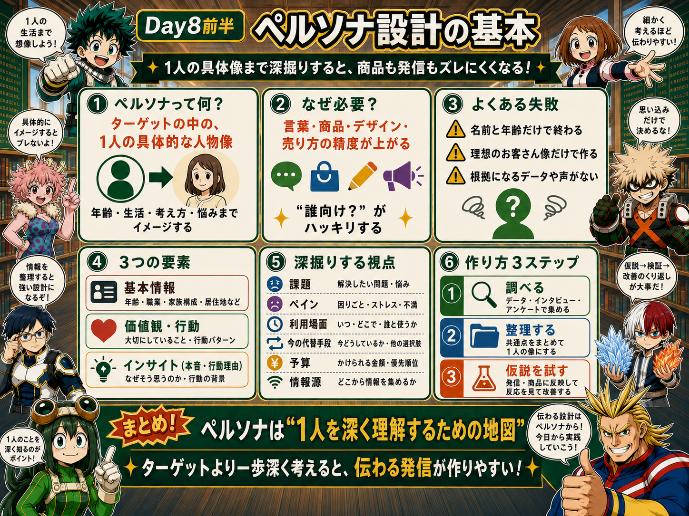
3. USP｜「それならあなたを選ぶ」と思ってもらう理由
USP（Unique Selling Proposition）は独自の売り・強み・選ばれる理由。大事なのは自分の自慢ではなく、相手にとってどんな価値があるか。
違いが伝わらず「どこでも同じ」と見られ、価格だけで比べられやすい。
「経験10年」だけでなく、それによって相手がどう助かるかまで変換する。
「〇〇な人のための△△サービス」のように、一言で方向が分かる形を目指す。
- 誰に向けるか決める。
- 相手の本当の悩みを探す。
- 自分がどう解決できるかを考える。
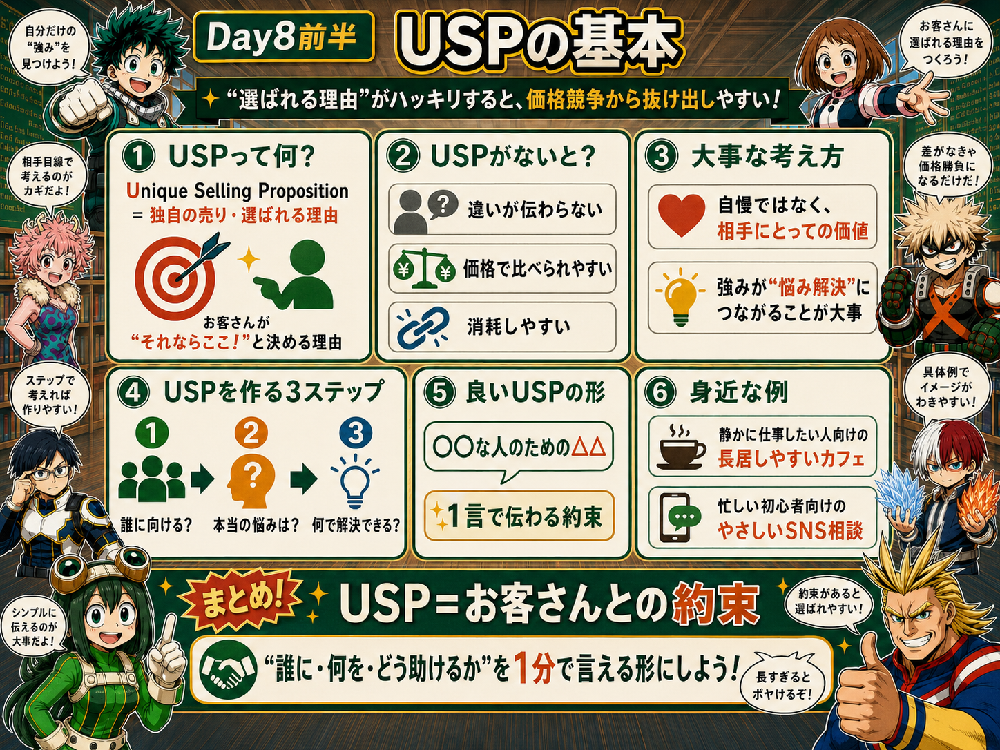
4. USPを言葉にする｜強みを「伝わる約束」へ変換する
自分の強みをそのまま並べても相手には伝わりにくい。「誰に」「何を」「どう助ける」を1文にする。
誰に届けたい？ どんな悩み？ 自分の強みは？ を書き出す。
知識→分かりやすい説明、経験→失敗しにくい提案、速さ→急ぎでも助かる、のように変える。
「〇〇な人のための、△△できる□□」の形で短くする。
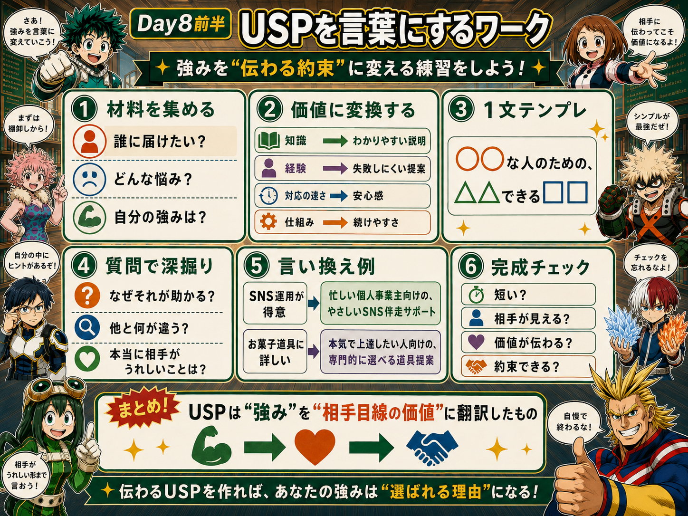
5. 強みを価値に変える｜「できること」ではなく「相手が得るもの」を言う
資格・経験年数・知識量は材料。それだけで終わらず、「だから相手にどんな良いことがある？」まで変換する。
- 資格がある
- 経験が長い
- 制作が速い
- 専門知識が深い
- 初心者でも安心
- 失敗しにくい提案
- 急ぎでも助かる
- 迷わず選べる
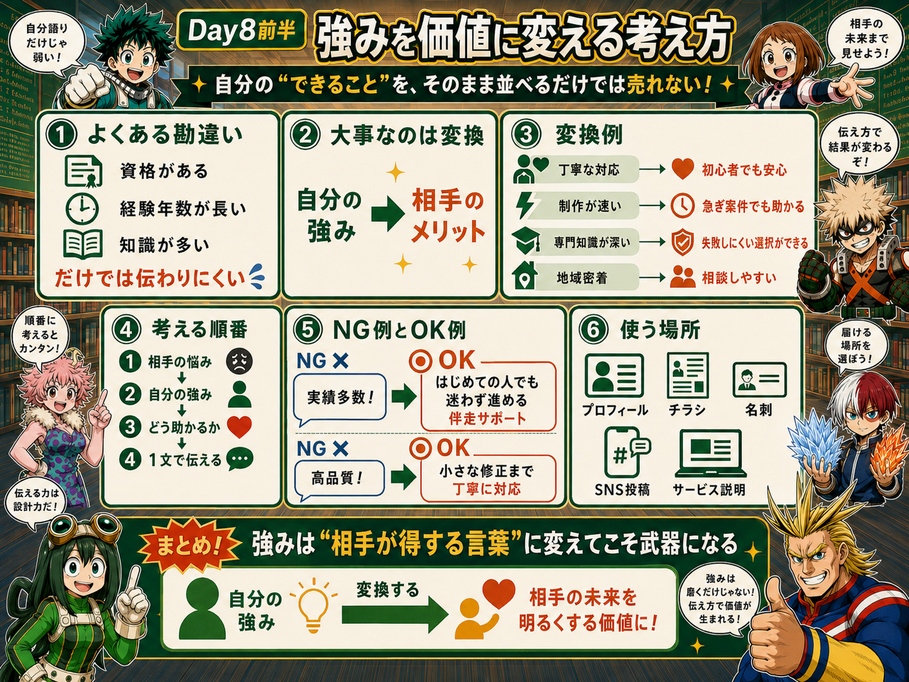
6. USP＝お客様との約束｜「何を約束できるか」を決める
元資料では、USPを「ライバルとの差」だけでなく、お客様に約束できる1つの価値として考える視点が紹介されている。
一瞬で意味が分かる。
専門用語より、相手が理解できる言葉。
使うとどう良くなるかが見える。
実際に提供できる約束にする。
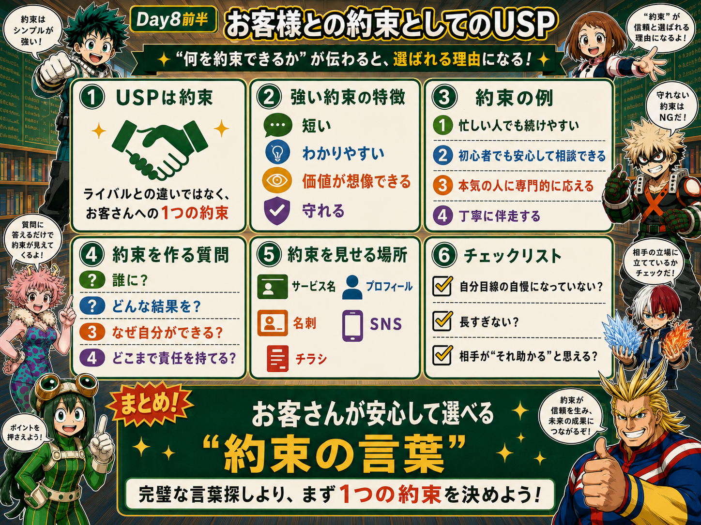
7. ブランディング事例｜「何を売るか」から「なぜ選ばれるか」へ
元資料では、1951年創業のお菓子道具店が、市場変化と競合増加を受けて、自社の専門性・ターゲット・存在価値を見直した事例が紹介されている。
和菓子職人向けから洋菓子・パン向けへ事業を広げ、ECやInstagramでも成長。
競合増加でアクセス・売上が低下。広告やSEOだけでなく、存在価値そのものを見直した。
長年のお菓子道具への専門知識と経験を、価格ではなく「選ばれる理由」として捉え直した。
ライト層全般ではなく、パティシエ・菓子職人・パン職人・本格趣味層など「お菓子作りに熱意を持つ人」へ。
「お菓子作りの喜びをかたどる」を軸に、道具そのものだけでなく体験や価値を届ける方向へ。
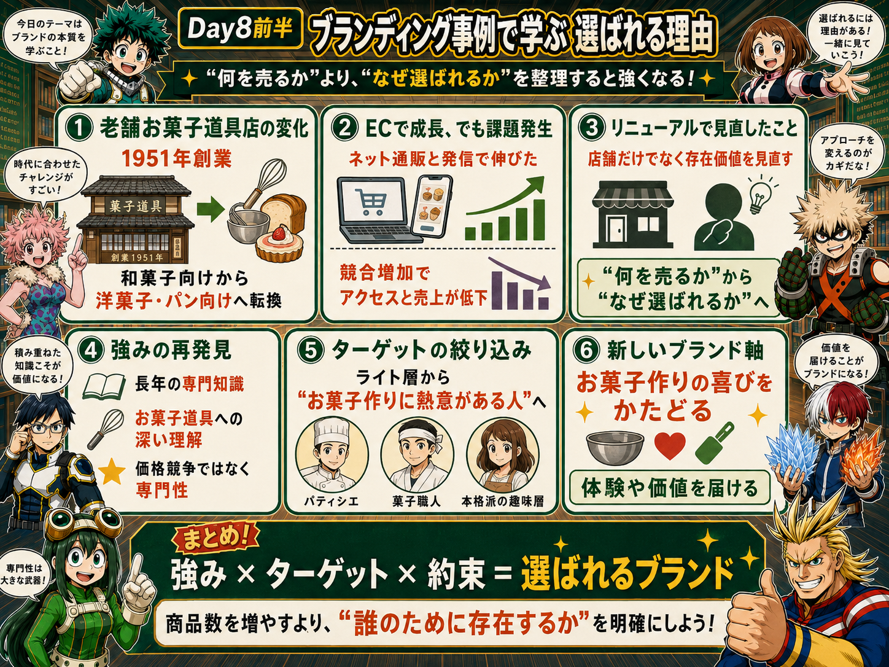
8. マーケティング設計の流れ｜順番を決めれば迷いにくい
マーケティングは「売り込む技術」ではなく、人を理解して伝わる形にする流れ。最初からCanvaへ行かず、相手から考える。
誰に届ける？
具体的な1人はどんな人？
何に困り、なぜ動けない？
なぜ自分が選ばれる？
キャッチコピー・説明文へ。
名刺・SNS・チラシへ配置。
見られた？ 問い合わせた？
反応を見て修正する。
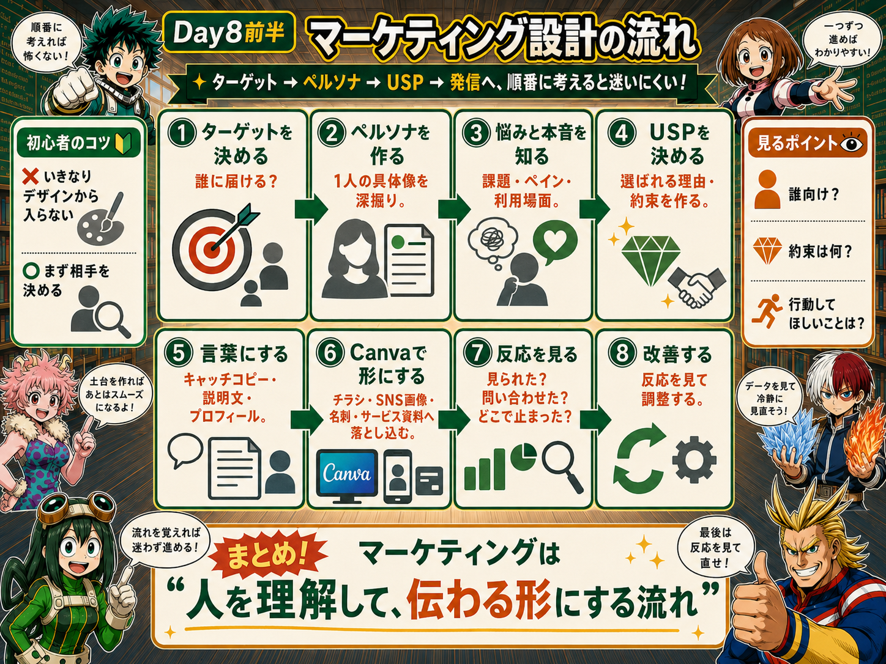
9. Canvaへ落とし込む｜Day8前半の名刺に「誰向け・価値・導線」を入れる
Day8前半で作った91mm×55mmの名刺を、Day8ではマーケティング目線で強化する。見た目を増やすのではなく、伝える情報の優先順位を変える。
名前＋「何ができる人か」が分かる肩書きやUSPを短く置く。
相手が得るメリット、サービス内容、実績などを必要な分だけ置く。
電話・メール・SNS・QRコードなど、「次にどう動くか」を分かりやすくする。
Canvaでの超初心者ワークフロー
- 91mm×55mmの名刺を開く。
- ターゲットを1人想像する。
- USPを1文だけ置く。
- 名前・サービス・連絡先を3グループに分ける。
- 色は2〜3色程度に絞る。
- 重要情報は端から5mm以上内側に置く。
- QRコードを入れて、相手が次へ進めるようにする。
- スマホ画面と紙の両方で読みやすさを確認する。
10. Day8前半｜実習ミッション
- ターゲットを1つ決める。
- ペルソナを1人作る。
- 悩み・ペイン・今の代替手段を書く。
- 自分の強みを3つ書く。
- 強みを相手のメリットに変換する。
- USPを1文にする。
- Canvaの名刺またはプロフィール画像へ反映する。
- 「誰向け？」「何が得られる？」「次にどうする？」が分かるか確認する。
11. Day8前半｜参考動画
▶ 参考動画1｜ターゲット設定の基本
▶ 参考動画2｜ペルソナ設計
▶ 参考動画3｜USPの基本
▶ 参考動画4｜USP＝お客様との約束
▶ 参考動画5｜ブランディング事例
12. Day8後半｜USP・市場トーン・成果が出るチラシ設計
前半では「誰に届けるか」と「選ばれる理由」を作った。後半は、そこからさらにUSPを強くする → 市場の空気を読む → Canvaで売れる見せ方にするところまで進む。難しいマーケティング用語を暗記するより、順番で覚える。
「丁寧です」「品質いいです」って書いたら、それが強みなんちゃうの？
それだけだと競合も言えてしまうんだ。USPはお客さんが「それならここを選ぶ」と思う理由まで具体化するんだよ。
覚え方：自分の特徴 → 相手のメリット → 選ぶ理由。「丁寧！高品質！」だけで終わるな！ 誰をどう助けるのかまで言え！
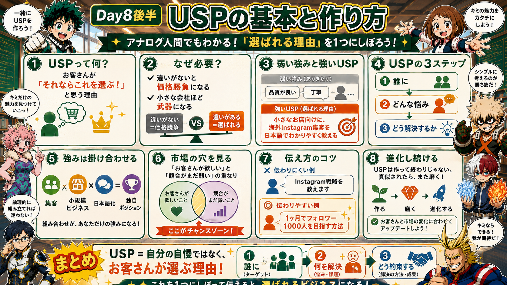
13. USPをさらに強くする｜「顧客の欲求 × 競合の空白」を探す
市場が混み合っているほど、「自社の魅力」だけを見るより、お客さんが本当に欲しいものと競合がまだ満たしていないことの重なりを見る。
悩みの解決、安心、速さ、楽しさ、便利さ、理想の未来など。
まだ十分に提供されていない価値、分かりにくい所、不満が残っている所。
顧客ニーズと競合の穴が重なる所が、USPの候補になる。
元資料の成功例から見る考え方
- 31アイスクリーム：種類の少ない市場で、「毎日違うフレーバーを楽しみたい」という欲求に応えた例として紹介。
- ドミノピザ：「届くころには冷めている」という不満に対し、強い配達約束で差別化した例として紹介。
14. 小さい会社・個人の戦い方｜「広く浅く」より「狭く深く」
大手と同じ市場・同じ土俵で正面から戦うより、特定の顧客へ専門性を高めた方が、小規模ビジネスは選ばれやすい。
スキル・経験・得意な顧客・提供方法・独自ノウハウなどを組み合わせる。
特定の悩みや特定の顧客へ深く刺さる専門性を作る。
最初に支持を得てから、実績・口コミ・影響力を使って次の市場へ広げる。
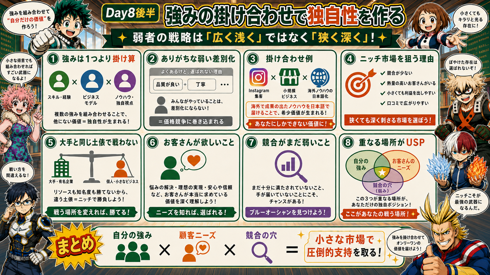
15. USPを「顧客との約束」にする
強いUSPは、かっこいい言葉ではなく「このサービスを選ぶと、あなたにこういう価値を届けます」という約束になる。
ターゲットを具体的にする。
相手の困りごと・不満・課題。
相手が手に入れたい未来や変化。
経験・実績・事例・仕組みなど。
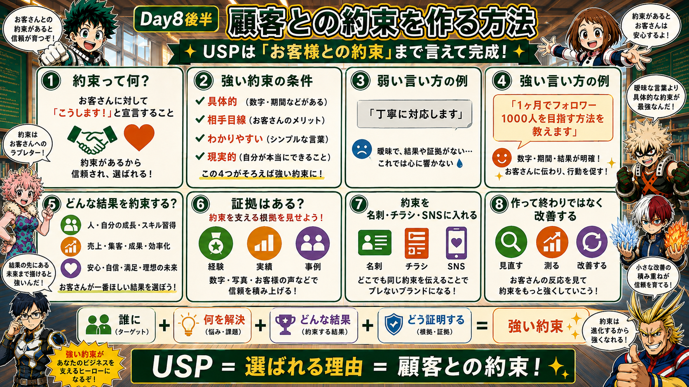
16. USP言語化ワーク｜専門用語ではなく「相手が欲しい結果」で書く
よいUSPでも伝わらなければ意味がない。専門用語や自分目線の自慢を、顧客の言葉へ翻訳する。
「Instagramマーケティング戦略を教えます」
元資料では「1ヶ月でフォロワー1000人を増やす方法を教えます」のように、欲しい結果で伝える例を挙げている。
- 誰に届ける？
- その人の本音・困りごとは？
- 何を解決する？
- なぜ自分ができる？
- 競合とどう違う？
- 一言で言うと？
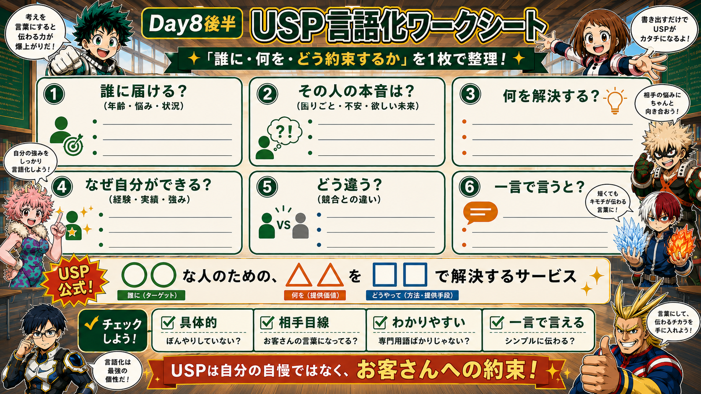
17. セールスデザインのもう1軸｜市場のトーン＆マナーを合わせる
伝える内容（ベネフィット）が正しくても、見た目が市場の雰囲気とズレると「自分向けではない」と判断されやすい。そこで見るのがトーン＆マナー。
背景・アクセント色の傾向を見る。
太さ・硬さ・柔らかさ・年齢感を確認。
どんな人物・写真・表情が多いかを見る。
炎・光・メタリック、花・リボン・グラデーションなどの傾向を見る。
市場分析の手順
- その市場で売れている上位1〜3社を見る。
- 色・フォント・写真・装飾の共通点をメモする。
- クライアントがいる場合は、競合だと思う上位3社を聞く。
- 自分のデザインと横並びにして、「市場の中で浮いていないか」を確認する。
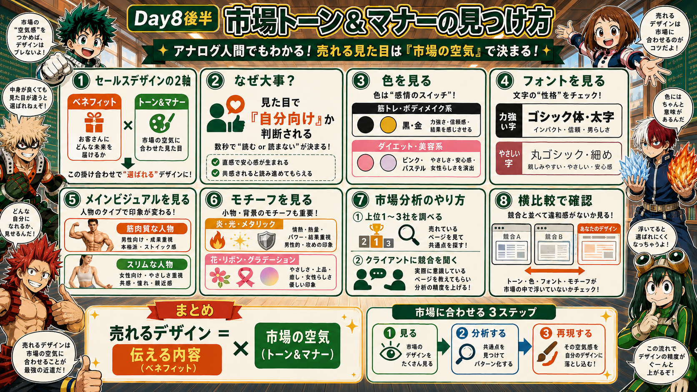
18. 成果が出るチラシ｜見た目より前の「設計」で差がつく
チラシはアートではなく、反応を生む道具。Canvaを開く前に「誰に・何を・どこまで行動させるか」を決める。
自社目線ではなく、まず顧客の課題から考える。
ターゲットを絞り、「自分向け」と感じる世界観にする。
全部の特徴ではなく、課題解決につながる情報を残す。
見た目より、興味を引き行動を促す要素を優先。
「知る→興味→信頼→購入」のどの段階を担当するか決める。
目的・導線・必要情報を先に決め、最後に装飾する。
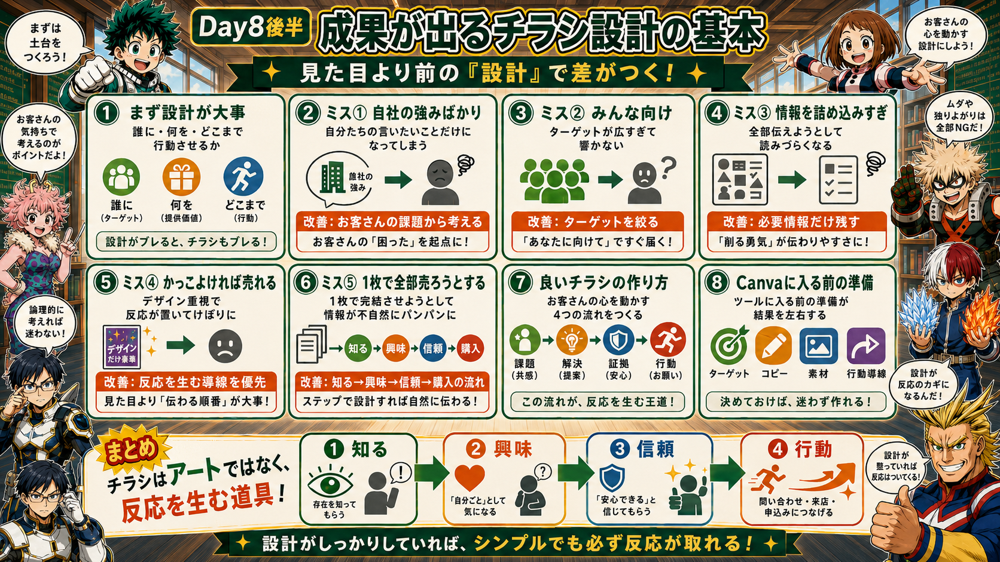
19. マーケティング設計図｜ターゲットから行動導線まで8ステップ
迷ったらこの順番に戻る。マーケティングを「難しい分析」ではなく、相手を理解して伝わる形へ変える手順として使う。
誰に届ける？
具体的な1人は？
何に困っている？
解決後に何を得る？
なぜ自分が選ばれる？
どんな見た目なら「自分向け」に見える？
名刺・チラシ・SNSで同じ軸を使う。
QR・申込・相談など、次の一歩を明確にする。
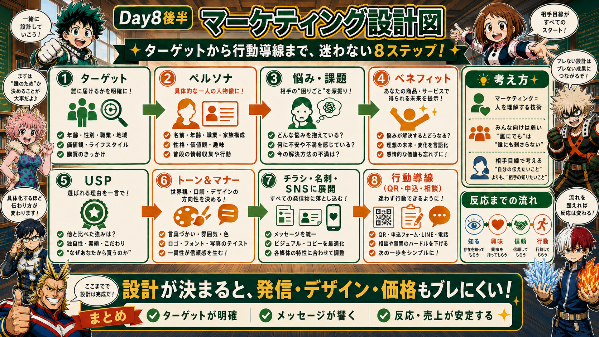
20. Canvaへ落とし込む｜名刺・チラシを同じマーケティング軸で作る
Canvaでは「装飾を選ぶ」前に、USP・市場トーン・行動導線を置く。Day8前半で使った名刺も、後半の視点でさらに強化できる。
- 重要情報は端から5mm以上内側。
- 名前＋何ができる人か＋USPを優先。
- 連絡先とQRをまとめ、次の行動を1つにする。
- 色・フォントはターゲット市場のトーンに合わせる。
- 最初に「誰向けか」が分かる見出し。
- 相手の課題とベネフィット。
- USP・選ばれる理由。
- 最後にQR・申込・相談などのCTA。
- ターゲットを決める。
- 悩みを1つ選ぶ。
- USPを1文にする。
- 競合3社を見て市場トーンを確認する。
- 目的に近いCanvaテンプレートを選ぶ。
- コピー・色・写真・フォントを市場に合わせる。
- QR・申込・相談など行動導線を1つ置く。
- 誤字・情報・読みやすさを見直して保存する。
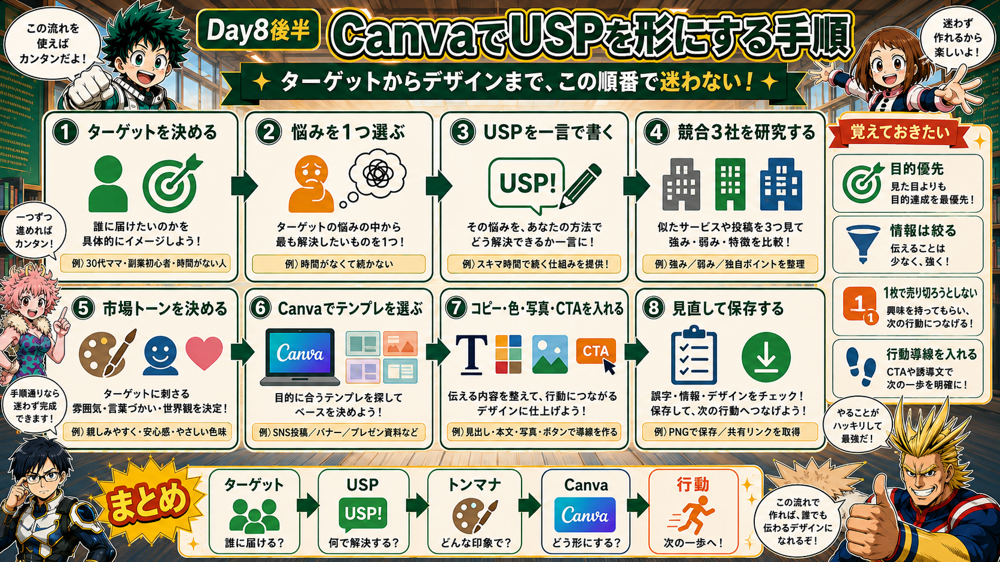
21. Day8後半｜実習ミッション
- ターゲットを1人に近い形で決める。
- 一番強い悩みを1つ決める。
- 競合3社を見て、色・フォント・写真・装飾をメモする。
- 自分の強みを3つ書き、掛け合わせる。
- 顧客ニーズと競合の穴を探す。
- USPを1文にする。
- 名刺へ「名前＋USP＋QR」を配置する。
- チラシへ「悩み→ベネフィット→USP→CTA」を配置する。
- 競合と横並びにして、市場から浮いていないか確認する。
- 「知る→興味→信頼→行動」のどこを担当するチラシか確認する。
22. Day8後半｜参考動画
23. Day9前半｜Canva AIでSNSアイコンと世界観イラストを作る
Day9前半は、Canva AIを使ってSNSアイコンを作る方法と、同じテイストで世界観をそろえる考え方をまとめた回。難しい専門知識はあと回しでOK。まずは「文章でイメージを伝える → いくつか作る → Canvaで整える → SNSやステッカーに使う」という流れを覚えれば十分。
文章でイメージを伝えて、人物・動物・ショップ用アイコンを作る。
丸フレーム・色・文字・素材を使って、SNS向けに見やすく整える。
同じスタイル・同じ色・同じ雰囲気の言葉を使って、ブランド感を出す。
24. Canva AIでSNSアイコンを作る｜超初心者向けの入口
CanvaのAI画像生成を使うと、文章の指示だけでオリジナルアイコンが作れる。人物でも、猫でも、お店用のキャラクターでもOK。SNSプロフィールに使うなら、基本は1:1（正方形）で考える。
人物アイコン／動物アイコン／ショップやブランド用アイコン。
誰・見た目・表情・持ち物・色・用途。これだけでかなり伝わる。
1回で決めず、4案くらい作って比べる。いきなり長文にしなくてOK。
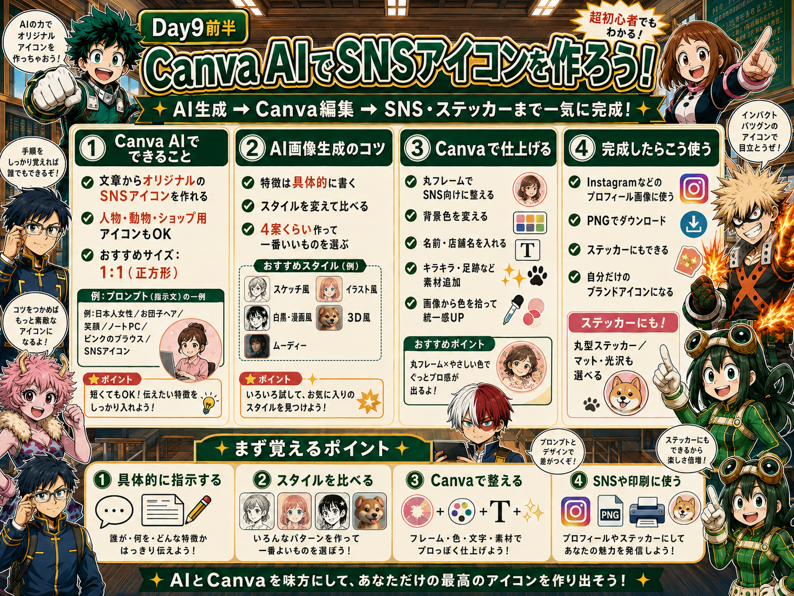
25. 世界観イラストとスタイル選び｜同じ雰囲気をそろえると強い
CanvaのAI画像生成では、同じテーマでもスタイルを変えるだけで見た目が大きく変わる。SNSやブランドに使うなら、毎回の投稿や素材の雰囲気をそろえることが大事。
写真っぽくリアル。実写に近い見え方。
手描きっぽい。やさしく親しみやすい。
LINEアート・幾何学・リソグラフ・インパスト・3Dクロブ・スクラップブックなど。
美容系はやわらかく、ブランド系は上品に、ショップ系は親しみやすく、など目的に合わせる。
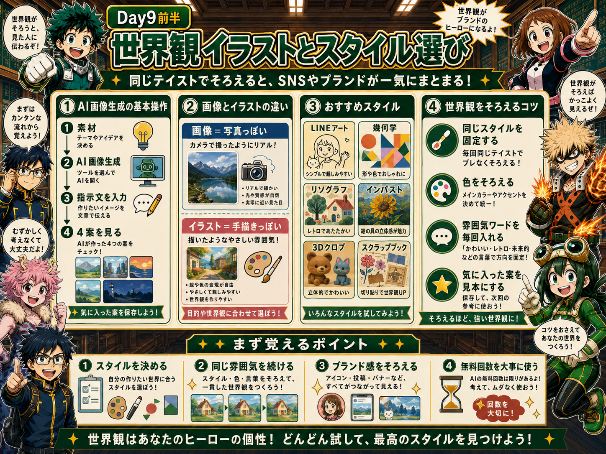
26. アイコン用プロンプトの作り方｜「指示のレシピ」として考える
プロンプトは難しい呪文じゃなくて、AIへの説明文。基本は「誰 / 見た目 / 表情 / 持ち物 / 色 / 用途」の順で書けば十分伝わる。
日本人女性 / お団子ヘア / 笑顔 / ノートPC / ピンクのブラウス / SNS用アイコン
白い猫 / 茶色い帽子 / 笑顔 / カフェ用アイコン
柴犬 / まるい顔 / やさしい色 / ショップアイコン
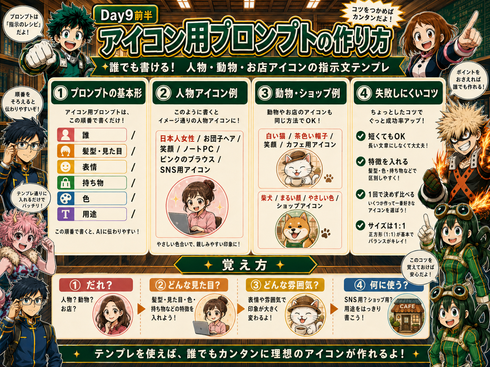
27. Canvaでアイコンを仕上げる｜丸フレーム・色・文字で整える
AIで作っただけでも使えるけど、Canvaで少し整えると一気に見やすくなる。とくに大事なのは丸フレーム / 背景色 / 文字 / 素材 / 最後の見直し。
SNSアイコンは円で表示されることが多いので、最初から丸く整えると失敗しにくい。
主役が見えるように背景を整理。色は2〜3色にしぼるとまとまりやすい。
名前・店舗名・キラキラ・足跡・枠線などを足して、オリジナル感を出す。
小さく表示しても見えるか、1:1で保存できているか、詰め込みすぎていないかを確認。
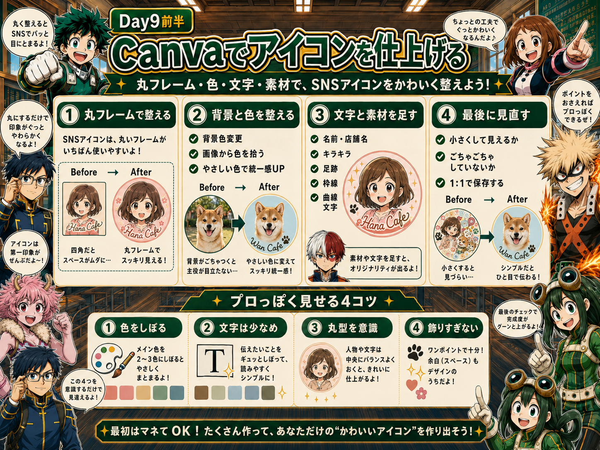
28. Canvaアイコン装飾テクニック｜おしゃれに見せる小ワザ
装飾の基本は、盛ることじゃなくて必要なものだけ足すこと。フォント、曲線文字、グラデーション、キラキラ素材、色合わせなどを使いすぎない範囲で加える。
丸い文字はやさしい印象、細い文字は上品な印象。
曲線文字・縁取り・グラデーションで見せ方を調整。
キラキラ・花・足跡・枠線などで雰囲気を補強。
イラストから色を拾い、2〜3色でまとめると統一感アップ。
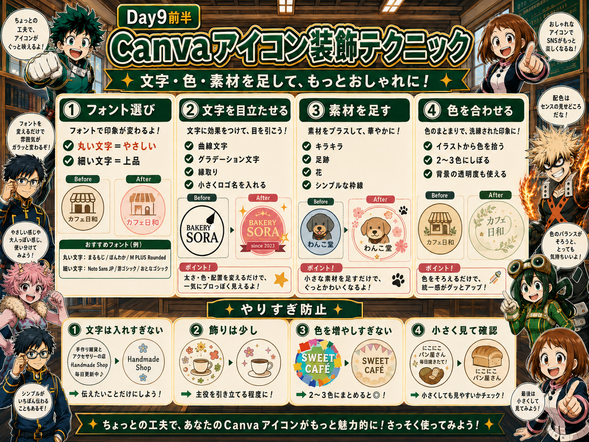
29. 同じテイストで世界観をそろえる｜ブランド感を育てるコツ
気に入ったスタイルを1つ決めて、色や雰囲気の言葉をそろえて使うと、投稿やアイコンが自然につながって見える。これが「世界観づくり」の基本。
線の太さ・塗り方・表情・小物など、毎回の見え方をそろえる。
ベース色を決め、よく使う色を3〜5色にまとめる。
人物・動物・風景・商品まで同じテイストで広げられる。
毎回同じ見た目だと覚えてもらいやすく、信頼感にもつながる。
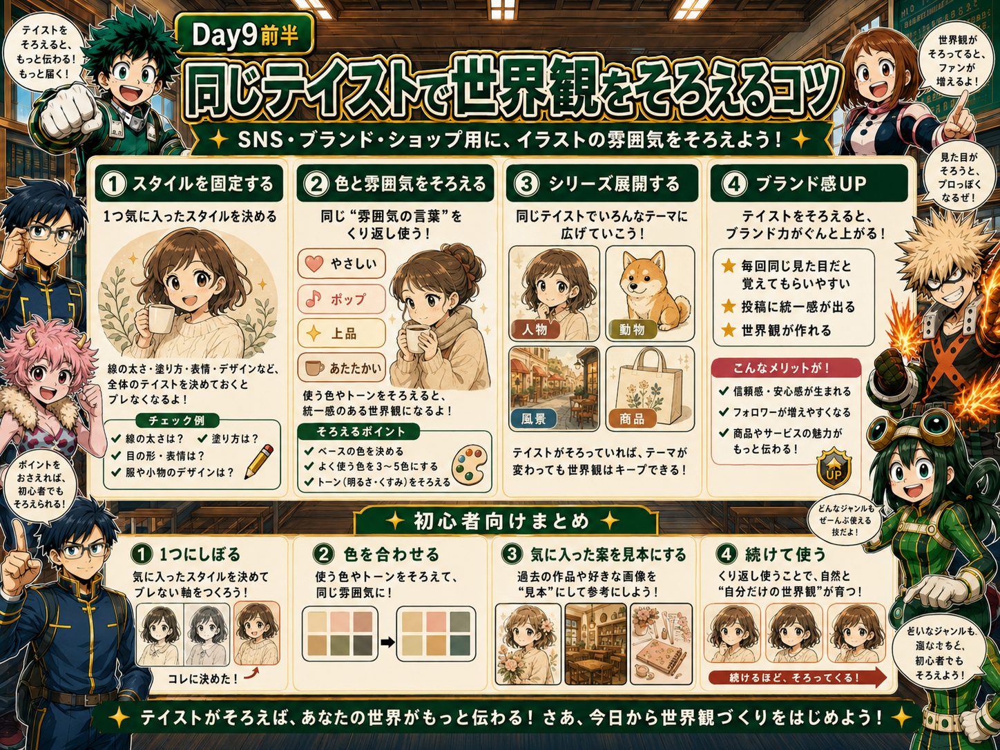
30. Canva AIアイコン作成8ステップ｜この順番なら迷わない
流れを順番で覚えたい人は、この8ステップだけ見ればOK。AI生成から保存までの全体像を1本の線でつなげると、かなり作業しやすくなる。
用途を決める → プロンプトを書く → スタイルを選ぶ → 4案を比べる。
いい案を選ぶ → Canvaで編集する。
名前や素材を足して、自分らしさを追加する。
PNG保存して、SNSやプロフィールで使う。
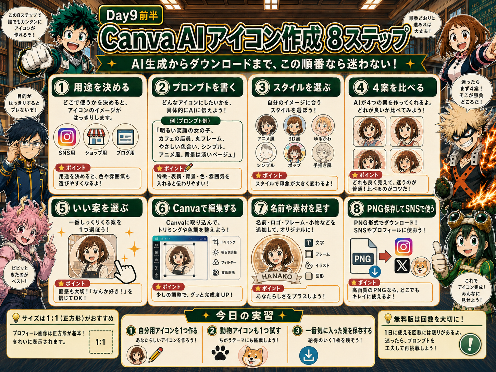
31. 完成後の使い道｜SNS・ショップ・ステッカーまで広げる
完成したアイコンはプロフィール画像だけじゃなく、ショップ用素材やステッカーにも使える。せっかく作ったら、保存形式と使い道まで考えておくと活用しやすい。
Instagram・X・TikTok・YouTubeなどで使える。小さくても見えるかチェック。
背景透過が便利。保存前にぼやけや切れを確認する。
ヘッダー・名刺・メニュー・ブログなど、ブランドの「顔」として使える。
丸型ステッカーやマット・光沢仕上げで、グッズにも展開できる。
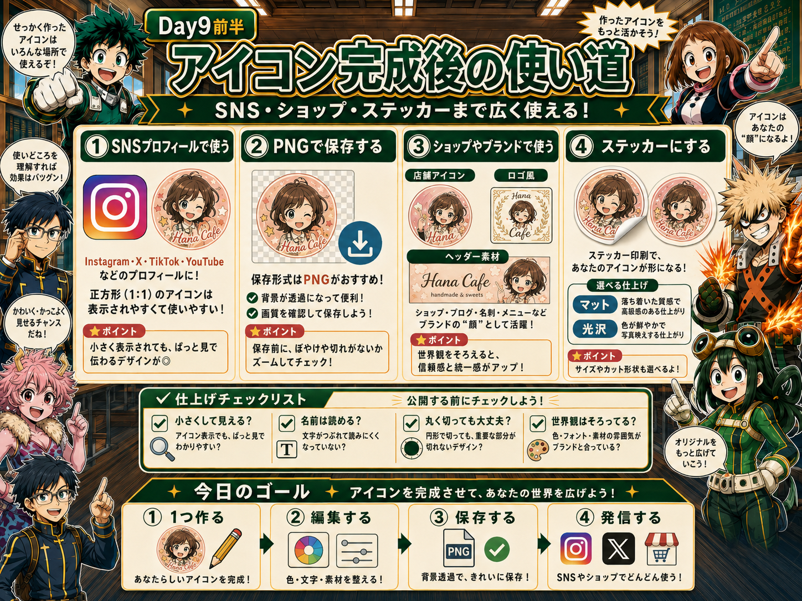
32. Day9前半｜実習ミッション
- 誰のアイコンかを決める（自分 / 猫 / お店など）。
- 見た目・表情・持ち物・色・用途をメモする。
- 1:1の正方形を前提に、プロンプトを書く。
- AIで4案くらい作って、好きな1案を選ぶ。
- Canvaで丸フレーム、背景、色を整える。
- 名前や店舗名、必要なら素材を足す。
- 小さく表示して、見やすいか確認する。
- PNGで保存し、SNSかショップで使ってみる。
- 同じスタイルで別パターン（動物や別テーマ）も1つ試す。
- 気に入った案を見本として保存して、次回の世界観づくりに使う。
33. Day9前半｜参考動画
34. Day9後半｜写真・手書き・3Dを「使えるデザイン素材」に変える
Day9前半ではCanva AIでSNSアイコンと世界観を作った。後半はさらに、写真をAIイラストへ変換する → 手書きをデジタル素材にする → 3D素材を作る → Canvaで名刺・SNS・グッズへ使うところまで進む。PCが苦手でも、1工程ずつ順番にやれば大丈夫。
35. 写真をAIイラストへ変換｜顔出ししたくないSNSにも便利
Canvaの「アプリ」からAIイラスト系アプリを開き、写真をアップロードしてスタイルを選ぶだけ。人物・家族・ペットの写真を、絵画風・アニメ風・デフォルメ風などへ変えられる。
Canvaの「アプリ」で使いたいAI変換アプリを検索。
顔や被写体が大きく、ピントが合った写真を選ぶ。
絵画、コミック、アニメ、水彩、デフォルメなどを試す。
同じ写真でもアプリやスタイルを変え、一番自然な案を選ぶ。
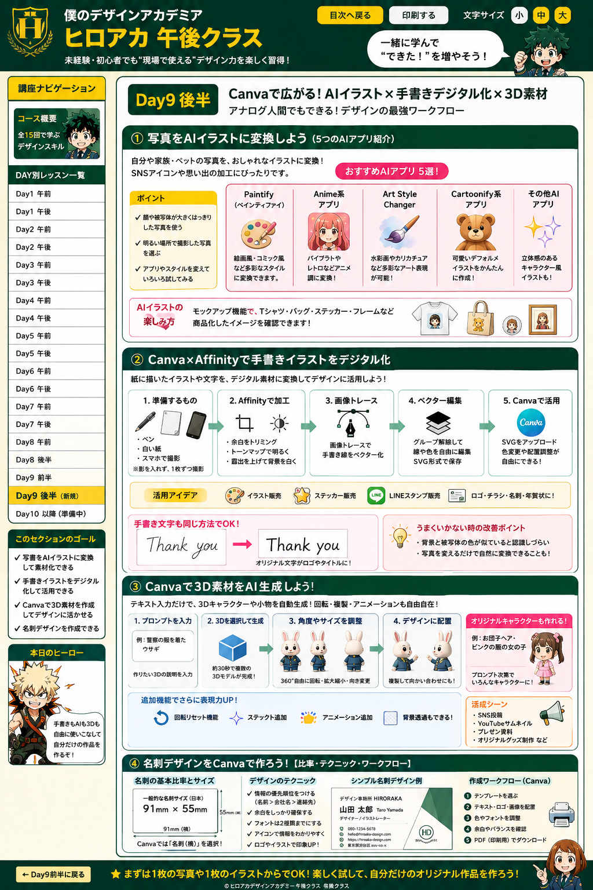
36. 試しやすいAIアプリと「綺麗に変換する3つのコツ」
元資料では複数のCanva AIアプリを試し、アプリによって仕上がりが大きく変わることを紹介している。1つで失敗しても、別アプリを試せばOK。
絵画風・コミック風など、写真をアートっぽく変換。
バイブラント・レトロなど、アニメ調の見せ方を試せる。
水彩・カリカチュアなど、表現の幅を広げやすい。
かわいいデフォルメ、親しみやすいキャラクター風。
立体感のあるキャラクター風など、用途に合わせて試す。
「どのアプリが一番」ではなく、自分の写真と目的に合うものを選ぶ。
- 顔や被写体が大きく、ピントが合った写真を使う。
- 明るい場所で撮った写真を使う。
- 同じ写真でもアプリやスタイルを変えて試す。
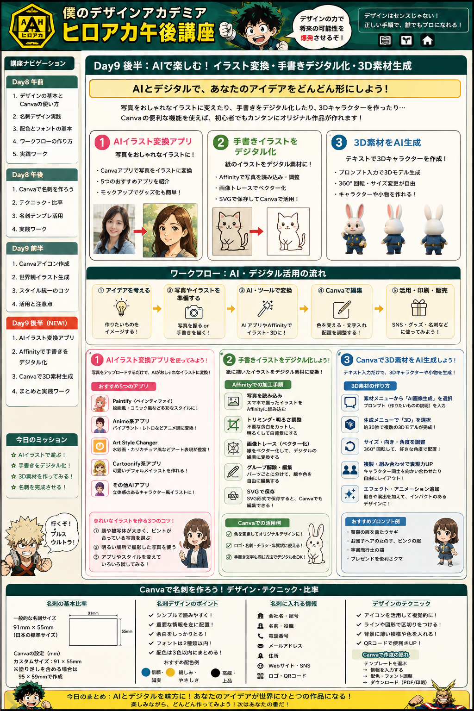
37. Canva×Affinity｜紙の手書きをデジタル素材へ変える
紙に描いたイラストや手書き文字は、スマホで撮影してAffinityへ読み込み、画像トレースでベクター化すると、Canvaで使いやすいオリジナル素材になる。
ペン・白い紙・スマホ。この3つだけ。
影を入れない。1枚ずつ撮る。線が見える明るさで撮る。
トリミング → 明るさ調整 → 背景を白く → 画像トレース。
ベクター素材へ整える流れ
- 写真をAffinityへ読み込む。
- 余白をトリミングする。
- トーンマップや露出で背景を明るくする。
- 画像トレースでベクター化する。
- グループ解除し、不要部分を削除・線や色を調整する。
- SVGで保存する。
- Canvaへアップロードする。
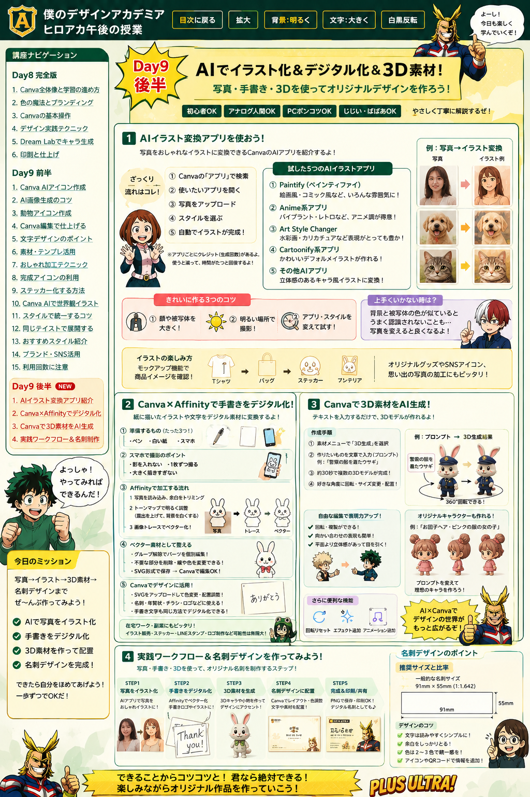
38. デジタル化した手書き素材をCanvaで使う
SVGをCanvaへ入れると、配置・色変更・組み合わせがしやすくなる。イラスト販売、ステッカー、LINEスタンプ、ロゴ、チラシ、名刺などへ展開できる。
ブランドカラーへ合わせ、既存素材と統一する。
名刺・チラシ・年賀状・SNSなど、用途に合わせてサイズ調整。
手書き文字＋ロゴ＋写真でオリジナル感を出す。
イラスト、ステッカー、LINEスタンプ、ロゴ素材などへ展開。
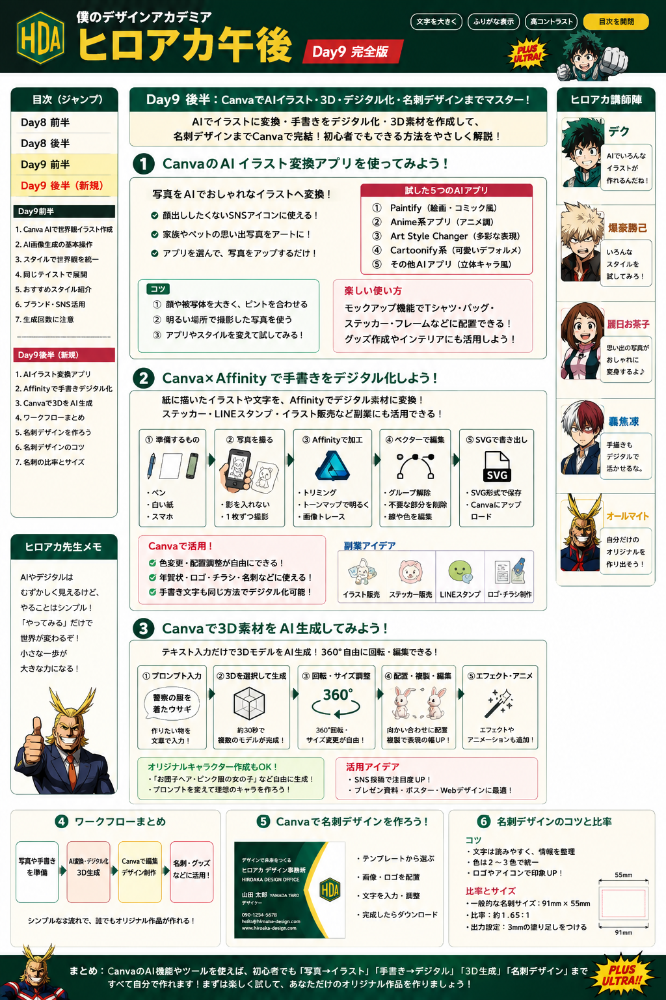
39. Canvaで3D素材をAI生成｜文章から立体キャラクターを作る
Canvaの3D生成では、作りたいものを文章で説明し、生成メニューで3Dを選ぶと、複数の立体モデル案を作れる。元資料では「警察の服を着たウサギ」やオリジナル人物キャラクターの例が紹介されている。
例：「警察の服を着たウサギ」「お団子ヘア・ピンクの服の女の子」。
生成メニューから3Dを選んで作成。
複数案を見て、顔・服・形が目的に近いものを選ぶ。
360°回転し、正面・横・後ろなど好きな角度へ。
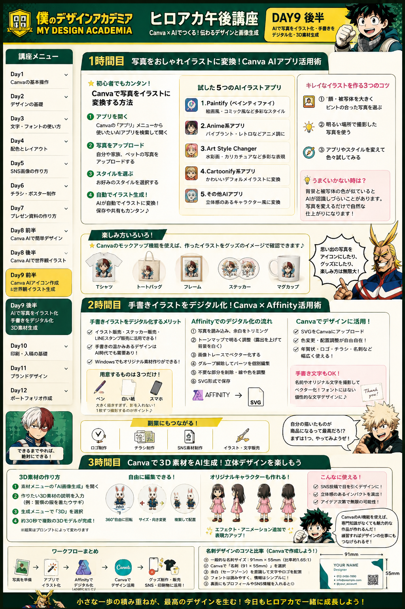
40. 3D素材を編集する｜回転・複製・エフェクト・アニメーション
3D素材は「作って終わり」ではない。向きや大きさを変えたり、複製してキャラクター同士を向かい合わせたり、アニメーションを足してSNS投稿へ使える。
正面・横・後ろへ回し、一番見せたい角度を選ぶ。
同じキャラを複数置き、会話・対決・並列などの構図を作る。
光・影・背景などと組み合わせて存在感を上げる。
SNS投稿やプレゼンで、動きをつけた見せ方へ広げる。
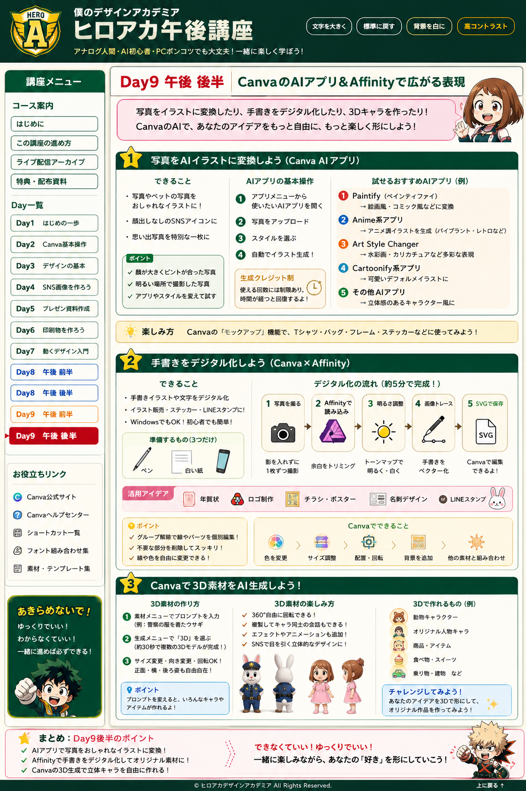
41. AIアプリの選び方｜「何を作りたい？」から逆算する
CanvaにはAI系アプリが複数あるので、名前を全部覚える必要はない。作りたい結果から選ぶ。
Paintify・Anime系・Art Style Changer・Cartoonify系などを比較。
Affinityでベクター化してSVGへ。
3D生成を使い、回転できる素材を作る。
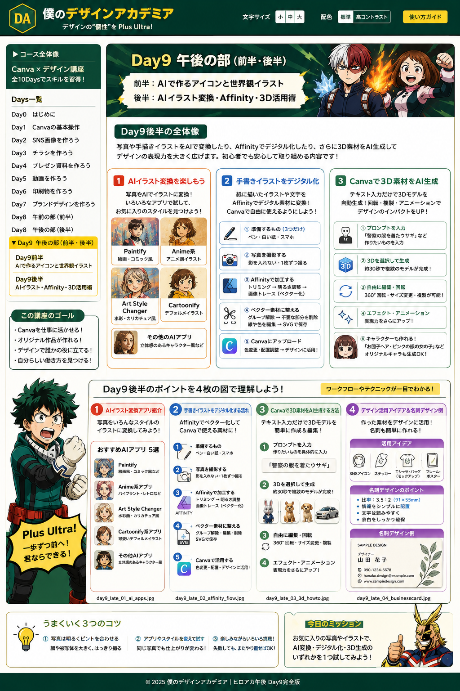
42. SNS・名刺・グッズへ展開｜1つの素材を何度も使う
作ったAIイラスト・手書きSVG・3Dキャラクターは、SNSアイコン、名刺、ステッカー、Tシャツ、バッグ、プレゼン、ショップ素材などへ横展開できる。
- プロフィールアイコンは1:1を基本にする。
- 小さく表示しても顔・主役が分かる構図にする。
- 背景色とキャラ色を近づけすぎない。
- 投稿・バナーは同じ色とテイストでそろえる。
- 日本標準の名刺サイズは91mm×55mm。
- 重要な名前・連絡先は端から5mm以上内側。
- 背景を端まで使う時は塗り足し3mmを意識。
- キャラクターは名前や連絡先より目立ちすぎない位置へ。
Canvaのモックアップで仕上がりを想像
Tシャツ・バッグ・フレーム・ステッカーなどへ素材を当て、実物になった時の見え方を確認する。グッズ化する前に「小さすぎないか」「細い線が消えないか」「背景と同化しないか」を見る。
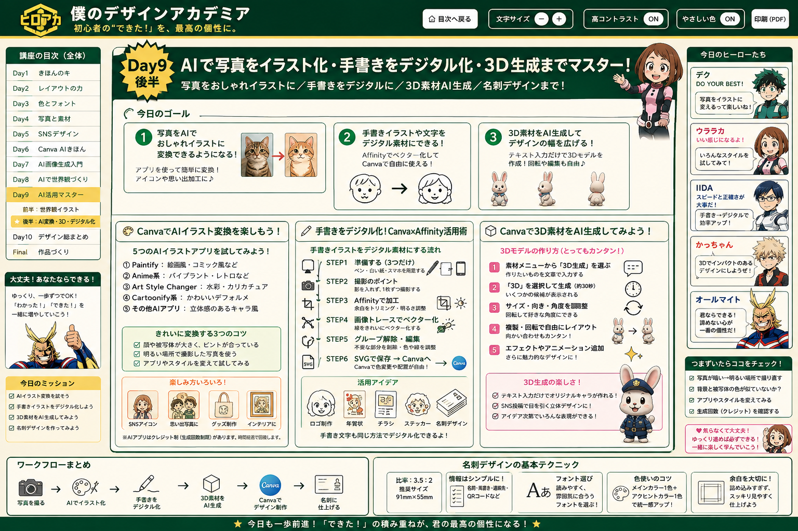
43. Day9後半｜実習ミッション
- 明るく、顔や被写体が大きく写った写真を1枚用意。
- CanvaのアプリからAIイラスト系を1つ選ぶ。
- 2〜3スタイルだけ試す。
- 一番良い案をCanvaへ置き、1:1のSNSアイコンにする。
- 手書き派：紙に絵または文字を描き、スマホ撮影→Affinity→SVG→Canva。
- 3D派：作りたいキャラクターを文章で書き、3D生成→回転→Canvaへ配置。
- 完成素材を名刺91×55mm、またはステッカーのモックアップへ置いてみる。
44. Day9後半｜参考動画
▶ 参考動画1｜Canva AIで写真をイラストへ変換
▶ 参考動画2｜Canva×Affinityで手書きをデジタル化
▶ 参考動画3｜Canvaで3D素材をAI生成